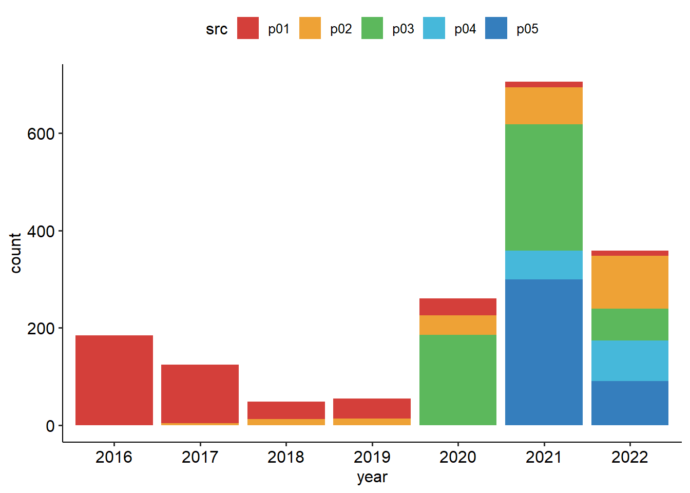
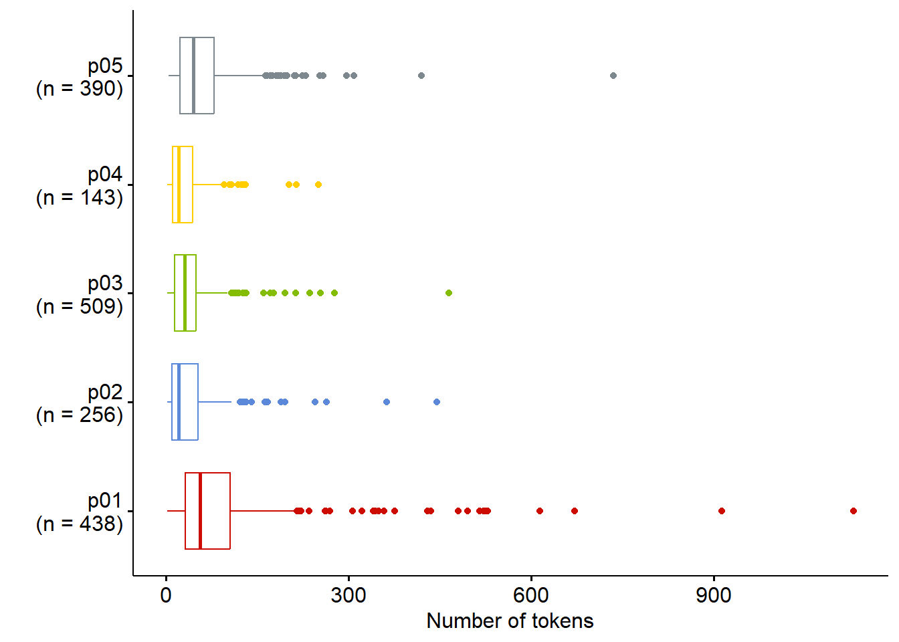
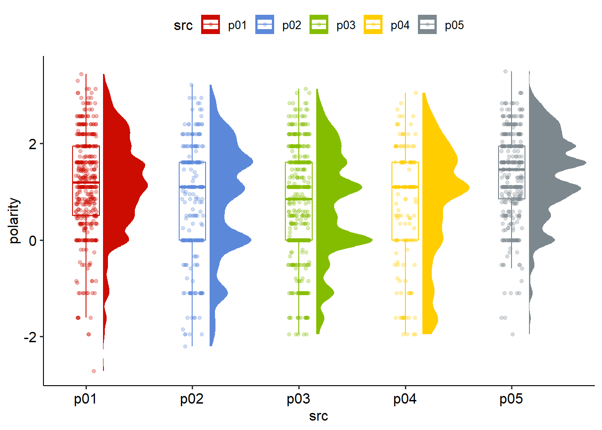

Text as Data
Digital behavioral data - Bonus session
Background
- Scraping Amazon Reviewss in R
Preparation
Load packages
Scraping
Create function
based on stackoverflow post.
scrape_amazon <- function(page_num, review_url) {
url_reviews <- paste0(review_url, "&pageNumber=", page_num, "&sortBy=recent")
doc <- read_html(url_reviews)
map_dfr(doc %>% html_elements("[id^='customer_review']"), ~ data.frame(
review_title = .x %>% html_element(".review-title") %>% html_text2(),
review_text = .x %>% html_element(".review-text-content") %>% html_text2(),
review_star = .x %>% html_element(".review-rating") %>% html_text2(),
date = .x %>% html_element(".review-date") %>% html_text2() %>% gsub(".*vom ", "", .),
author = .x %>% html_element(".a-profile-name") %>% html_text2(),
page = page_num
)) %>%
as_tibble %>%
return()
}Define urls
url <- list(
p01 = "https://www.amazon.de/LINEAVI-Eiwei%C3%9F-Shake-Kombination-Molkeneiwei%C3%9F-laktosefrei/product-reviews/B018IB02AU/ref=cm_cr_dp_d_show_all_btm?ie=UTF8&reviewerType=all_reviews",
p02 = "https://www.amazon.de/Detoxkuren%E2%80%A2-Entw%C3%A4sserung-Entschlackung-Stoffwechsel-entschlacken/product-reviews/B072QW5ZN1/ref=cm_cr_dp_d_show_all_btm?ie=UTF8&reviewerType=all_reviews",
p03 = "https://www.amazon.de/Saint-Nutrition%C2%AE-KETO-BURN-Appetitz%C3%BCgler/product-reviews/B08B67V8G5/ref=cm_cr_dp_d_show_all_btm?ie=UTF8&reviewerType=all_reviews",
p04 = "https://www.amazon.de/Yokebe-vegetarisch-Mahlzeitersatz-Gewichtsabnahme-hochwertigen/product-reviews/B08GYZ8LRB/ref=cm_cr_dp_d_show_all_btm?ie=UTF8&reviewerType=all_reviews",
p05 = "https://www.amazon.de/Vihado-Liquid-chlorophyll-drops-alfalfa/product-reviews/B093XNC8QH/ref=cm_cr_arp_d_paging_btm_next_2?ie=UTF8&reviewerType=all_reviews"
)- p01 (
Lineavi): 1.679 Gesamtbewertungen, 782 mit Rezensionen –> 79 pages - p02 (
DietySlim): 1.652 Gesamtbewertungen, 268 mit Rezensionen –> 28 pages - p03 (
Keto Burn): 3.341 Gesamtbewertungen, 540 mit Rezensionen –> 55 pages - p04 (
Yokebe): 1.586 Gesamtbewertungen, 156 mit Rezensionen –> 16 pages - p05 (
Vihado): 1.335 Gesamtbewertungen, 396 mit Rezensionen –> 40 pages
Scrape data
amazon <- list()
# p01
for (i in 1:79) {
df <- scrape_amazon(page_num = i, review_url = url$p01)
amazon$raw$p01[[i]] <- df
}
# p02
for (i in 1:28) {
df <- scrape_amazon(page_num = i, review_url = url$p02)
amazon$raw$p02[[i]] <- df
}
# p03
for (i in 1:55) {
df <- scrape_amazon(page_num = i, review_url = url$p03)
amazon$raw$p03[[i]] <- df
}
# p04
for (i in 1:16) {
df <- scrape_amazon(page_num = i, review_url = url$p04)
amazon$raw$p04[[i]] <- df
}
# p05
for (i in 1:40) {
df <- scrape_amazon(page_num = i, review_url = url$p05)
amazon$raw$p05[[i]] <- df
}Bind rows
product <- names(url)
# bind rows for each product
for (i in product) {
amazon$data[[i]] <- amazon$raw[[i]] %>%
bind_rows() %>%
rownames_to_column("id") %>%
mutate(across(id, as.numeric))
}
# bind rows of all products
amazon$full <- amazon$data %>%
bind_rows(.id = "src")Save data
saveRDS(
amazon,
file = here("content/08-text_as_data/data/reviews.RDS"))Data processing
amazon$clean <- amazon$full %>%
mutate(
# create unique id (src_id)
src_id = id,
id = paste(src, sprintf("%03d", id), sep = "_"),
# convert to factor
across(c(id, src), as.factor),
# edit date variable
date_raw = date,
date_base = str_extract(date_raw, "\\d{1,2}(.*)\\d{1,4}"),
## Change date format to DD.MM.YYYY
across(date_base, str_replace, " Januar ", "01."),
across(date_base, str_replace, " Februar ", "02."),
across(date_base, str_replace, " März ", "03."),
across(date_base, str_replace, " April ", "04."),
across(date_base, str_replace, " Mai ", "05."),
across(date_base, str_replace, " Juni ", "06."),
across(date_base, str_replace, " Juli ", "07."),
across(date_base, str_replace, " August ", "08."),
across(date_base, str_replace, " September ", "09."),
across(date_base, str_replace, " Oktober ", "10."),
across(date_base, str_replace, " November ", "11."),
across(date_base, str_replace, " Dezember ", "12."),
## Convert to date
date = as.Date(date_base, format = "%d.%m.%Y"),
## create date variables
year = as.factor(year(date)),
month = as.factor(month(date)),
day = as.factor(day(date)),
lang = as.numeric(str_detect(date_raw, "Italien")),
rating = as.numeric(str_extract(review_star, "\\d{1}(?=,)")),
# review body
review_body = paste(review_title, review_text)
) %>%
# relcoate variables
relocate(starts_with("src"), .after = id) %>%
relocate(starts_with("date"), .after = src_id) %>%
relocate(year,month,day, .before = review_title) %>%
relocate(starts_with("review"), .after = lang) %>%
relocate(review_star, .after = review_body) %>%
# delete variables
select(!(starts_with("date_")))amazon$final <- amazon$clean %>%
# filter only german reviews
filter(lang == 0)Exploratory data analysis
Number of reviews by product
amazon$final %>%
frq(src)src <categorical>
# total N=2009 valid N=2009 mean=2.69 sd=1.48
Value | N | Raw % | Valid % | Cum. %
--------------------------------------
p01 | 649 | 32.30 | 32.30 | 32.30
p02 | 268 | 13.34 | 13.34 | 45.64
p03 | 540 | 26.88 | 26.88 | 72.52
p04 | 156 | 7.77 | 7.77 | 80.29
p05 | 396 | 19.71 | 19.71 | 100.00
<NA> | 0 | 0.00 | <NA> | <NA>Reviews by year
amazon$final %>%
ggplot(aes(year, fill = src)) +
geom_bar() +
scale_fill_locuszoom() +
theme_pubr()
Ratings by product
# Total
amazon$final %>%
mutate(across(rating, as.factor)) %>%
ggplot(aes(src, fill = rating)) +
geom_bar() +
scale_fill_brewer(palette = "RdYlGn") +
theme_pubr()
# Relative
amazon$final %>%
mutate(across(rating, as.factor)) %>%
ggplot(aes(src, fill = rating)) +
geom_bar(position = "fill") +
scale_fill_brewer(palette = "RdYlGn") +
theme_pubr()Sentiment analysis
Create data (temporary corpora)
amazon$temp$crps <- corpus(
amazon$final,
docid_field = "id",
text_field = "review_body"
)
amazon$temp$crps_stats <- amazon$temp$crps %>%
summary(n = 100000) %>%
clean_names()Location parameters
amazon$temp$crps_stats %>%
select(types, tokens, sentences) %>%
descr()
## Basic descriptive statistics
var type label n NA.prc mean sd se md trimmed
types integer types 2009 0 39.78 40.36 0.90 29 33.06
tokens integer tokens 2009 0 53.07 70.60 1.58 34 40.40
sentences integer sentences 2009 0 3.38 3.27 0.07 2 2.75
range iqr skew
459 (1-460) 37 3.40
1128 (2-1130) 47 5.68
37 (1-38) 3 3.45Length of reviews by source
# add sample size
sample_size <- amazon$temp$crps_stats %>%
group_by(src) %>%
summarise(n = n())
amazon$temp$crps_stats %>%
# Add sample size as label
left_join(sample_size) %>%
mutate(src_label = paste0(src, "\n", "(n = ", n, ")")) %>%
ggboxplot("src_label", "tokens",
color = "src", palette = "startrek",
orientation = "horizontal") +
labs(x = "", y = "Number of tokens") +
theme(legend.position = "none")
Join datasets
library(quanteda.sentiment)
sent_val <- amazon$temp$crps |>
textstat_valence(dictionary = data_dictionary_sentiws) |>
rename(valence = sentiment)
sent_pol <- amazon$temp$crps |>
textstat_polarity(dictionary = data_dictionary_sentiws) |>
rename(polarity = sentiment)
amazon$senti <- amazon$final %>%
left_join(sent_val, by = c("id" = "doc_id")) |>
left_join(sent_pol, by = c("id" = "doc_id")) |>
mutate(
pol_fct = case_when(
polarity < 0 ~ "negativ",
polarity > 0 ~ "positiv",
TRUE ~ "neutral"),
val_fct = case_when(
valence < 0 ~ "negativ",
valence > 0 ~ "positiv",
TRUE ~ "neutral"),
)Polarity by product
amazon$senti %>%
ggplot(aes(x = src, y = polarity)) +
ggdist::stat_halfeye(
aes(fill = src),
adjust = .5,
width = .6,
.width = 0,
justification = -.3,
point_colour = NA) +
geom_boxplot(
aes(color = src),
width = .25,
outlier.shape = NA
) +
geom_point(
aes(color = src),
size = 1.3,
alpha = .3,
position = position_jitter(
seed = 1, width = .1
)
) +
coord_cartesian(xlim = c(1.2, NA), clip = "off") +
scale_color_startrek() +
scale_fill_startrek() +
theme_pubr()
Valence by product
library(ggsci)
amazon$senti %>%
ggplot(aes(x = src, y = valence)) +
ggdist::stat_halfeye(
aes(fill = src),
adjust = .5,
width = .6,
.width = 0,
justification = -.3,
point_colour = NA) +
geom_boxplot(
aes(color = src),
width = .25,
outlier.shape = NA
) +
geom_point(
aes(color = src),
size = 1.3,
alpha = .3,
position = position_jitter(
seed = 1, width = .1
)
) +
coord_cartesian(xlim = c(1.2, NA), clip = "off") +
scale_color_startrek() +
scale_fill_startrek() +
theme_pubr()
Ratings by categorical valence
amazon$senti %>%
flat_table(rating, val_fct) val_fct negativ neutral positiv
rating
1 172 81 102
2 65 28 38
3 48 37 49
4 36 53 132
5 111 116 941Topic Modeling
Text processing
# Corpus creation
amazon$crps <- corpus(
amazon$final,
docid_field = "id",
text_field = "review_body"
)
amazon$crp_stats <- summary(amazon$crps, n = 2500)
# Tokenization
amazon$tkn <- amazon$crps %>%
tokens(
remove_punct = TRUE,
remove_symbols = TRUE,
remove_url = TRUE,
remove_separators = TRUE) %>%
tokens_remove(pattern = stopwords("de"))
# DFM
amazon$dfm <- amazon$tkn %>%
dfm()